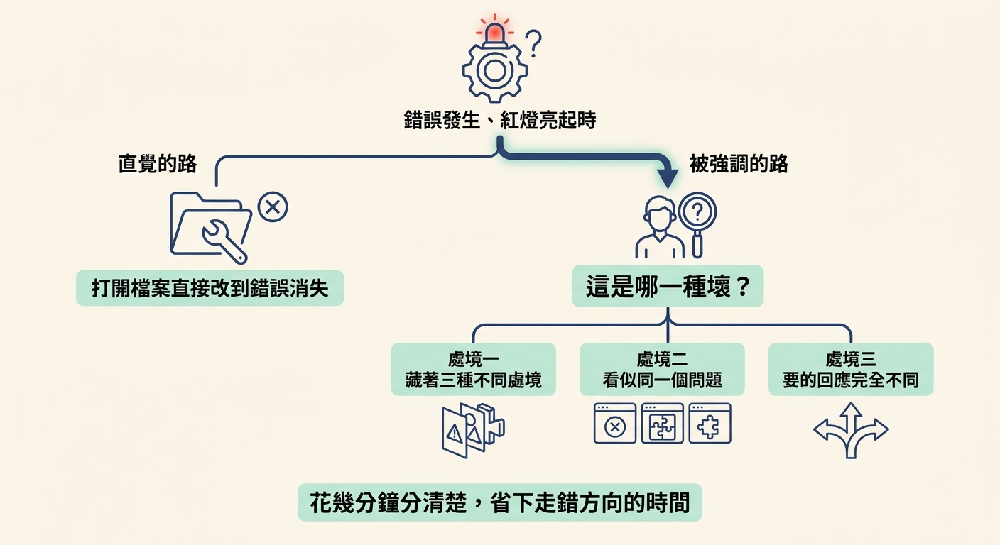
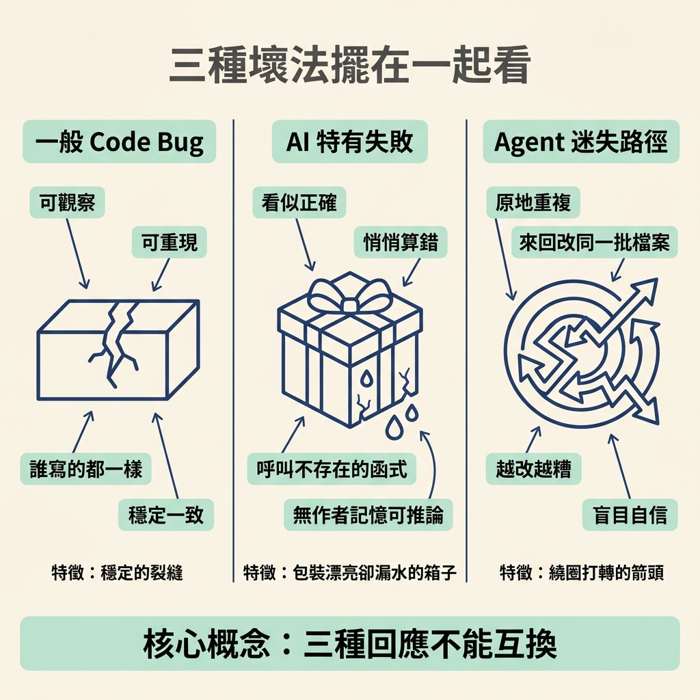
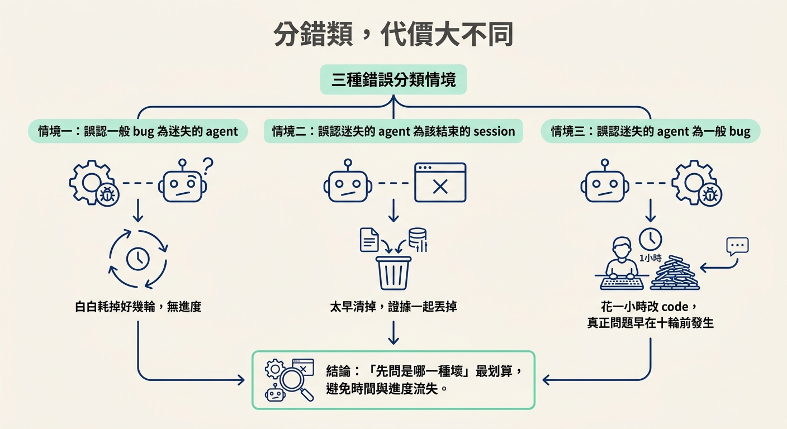

說出 broken 的三種壞法（一般 code bug、AI 特有失敗、agent 迷失路徑）各自長什麼樣，並用「無法解釋的修好等於沒抓到 bug」這條規則拒絕假修好。
專案一路都順順的，大部分事情大致照計畫走。可是真實的專案不會一直停在這裡，因為總有一天會有東西壞掉。紅燈亮起、某個請求炸掉、某個總額差了 1。
多數人的第一反應是直接跳進修法：打開檔案，改到錯誤消失為止。這個直覺很自然，卻也正是 bug 會回頭的原因。這一節要先把這個動作擋下來，換成另一個問題——「這是哪一種壞？」
為什麼要先問？因為同一個錯誤訊息背後，可能藏著三種完全不同的處境。它們看起來像同一個問題的三種版本，實際上要的回應完全不同。花幾分鐘分清楚是哪一種，常常能省下一個小時走錯方向。

這是一種真實的錯誤，會產生你可以觀察、也可以重現的行為。例如某個計算回傳錯的結果、某個請求直接崩掉、某個總額差了一位。它的行為跟你、同事、還是 agent 寫的 code 都無關——同樣的輸入，它壞得一模一樣。這種 bug 是工程師在有 AI 之前就一直在找的那種，找到它的方法早就有。
這一種只在 AI 寫的 code 上出現，而且有好幾種面貌：它呼叫一個根本不存在的函式庫函式；它寫出一段說服力十足、讀起來很對、卻悄悄算錯的邏輯；它在檔案中間偷偷做了一個真正的決定，卻沒告訴你；它漏掉一條存取規則，或漏掉一個邊界情況；又或者，它只在真實資料進來時才爆。
這種 bug 有一個共同點：快樂路徑（happy path）看起來已經完成了，第一個不尋常的輸入就把它從沒想過的東西全部炸出來。而它之所以特別難查，是因為你沒辦法用「作者的意圖」來推論——你不是那個作者。就算你親眼看著它被寫出來，你也不知道為什麼每一行會在那裡。
這一種問題根本不在 code 上，而是 agent 失去了方向。它開始重複同一個動作，來回改同一批檔案，每一次嘗試都讓專案比上一次更糟一點。最麻煩的是，它一邊離原因越來越遠，一邊仍舊完全有自信。
這時候你叫它「把問題修好」是沒用的，因為你正在請那個負責解決失敗的東西，去解決它自己造成的失敗——它現在就是失敗的一部分。
| 哪一種壞 | 長什麼樣 | 為什麼難 | 對應方法在哪 |
|---|---|---|---|
| 一般 code bug | 可觀察、可重現的真實錯誤，誰寫的都一樣 | 要找到根因，但至少它是穩定的 | 這個節點的第三、四步 |
| AI 特有失敗 | 看起來對卻悄悄出錯、呼叫不存在的函式、漏邊界、只有真實資料才爆 | 沒有作者記憶可以用來推論意圖 | 後續的「讀別人寫的 code」節點 |
| agent 迷失路徑 | 原地重複、來回改同一批檔案、越改越糟卻很自信 | 你要拿來修問題的那個東西本身也壞了 | 後續的「救回壞掉的 session」節點 |
把這張表記在心裡，你就有了分流的起點。真正有用的不是「哪一種比較嚴重」，而是「哪一種的回應跟另一種不能互換」。

在三種壞法底下，壓著同一條規則：你無法解釋的修好，就是還沒抓到的 bug。
如果我讓錯誤消失了，卻說不出它為什麼會發生，那我就沒有證明原因已經被移除。我可能只是把症狀藏起來、把它搬到別的地方，或讓那段 code 暫時比較難被走到而已。這也是為什麼除錯要「證據優先於直覺」——bug 是一件要證明的案子，不是一則要被消音的訊息。
既然三種都要花時間，為什麼還值得先分類？因為每一種分錯，付的代價並不一樣，而且三種都貴。
這三種代價分別對應三種分錯：把一般 bug 當成迷失的 agent、把迷失的 agent 當成一場該結束的 session、把迷失的 agent 當成一般 bug。看懂了這三行，你就知道為什麼「先問是哪一種壞」這麼划算。

東西壞掉時，最有用的第一個動作不是除錯技巧，而是一個問題：「這是哪一種壞？」總共有三種：一般 code bug（可重現、誰寫的都一樣）、AI 特有失敗（看似合理卻悄悄出錯，而且你沒有作者記憶可以推論）、以及 agent 迷失路徑（重複、來回、越改越糟卻很自信）。三種要的回應完全不同，分錯的代價也不一樣。而在三種之上壓著同一條規則：你無法解釋的修好，就是還沒抓到的 bug——bug 是要證明的案子，不是要消音的訊息。
知道有三種還不夠，關鍵是怎麼在當下認出自己手上是哪一種。下一節會把「看徵兆、選回應」變成一組可以照著問自己的判別問題，也會講清楚選錯時會發生什麼事。